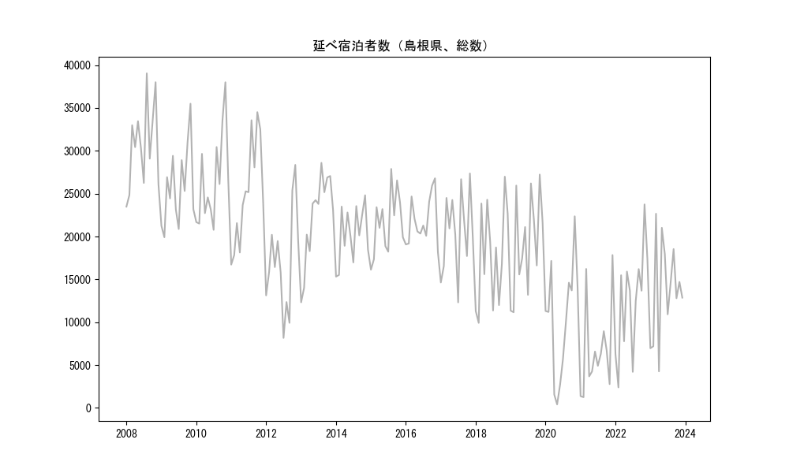
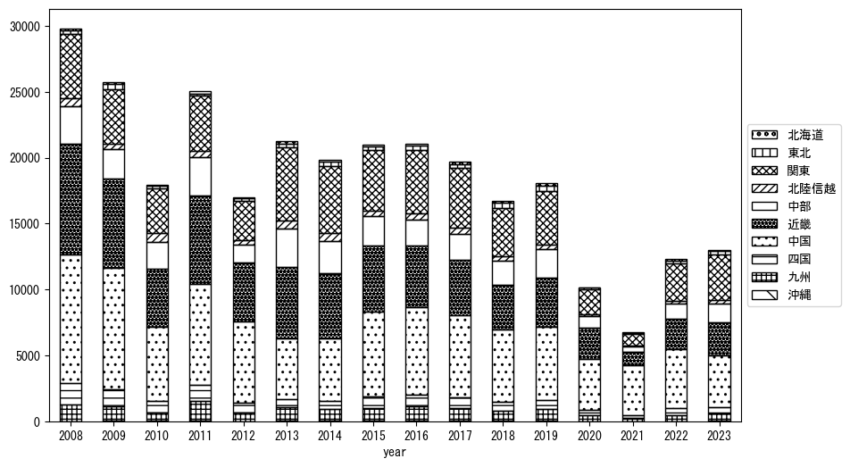
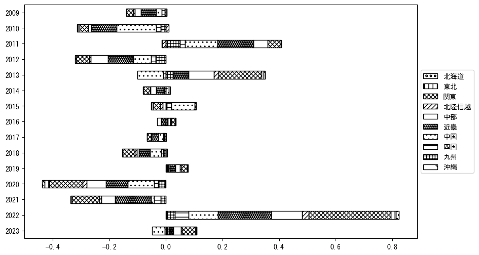
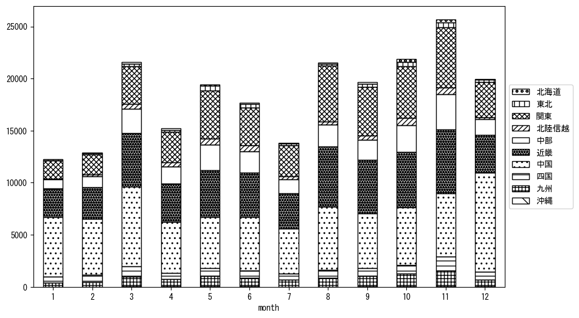
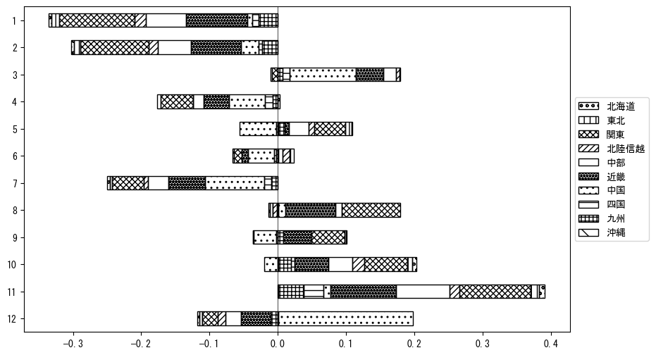

-
トップ
-
島根県
島根県
１．延べ宿泊者（総数）の推移
時系列グラフ

図１：島根県内の従業員数100人以上の宿泊施設での延べ宿泊者数（国外、居住地不詳を含む総数）。
基本統計量
表１：従業員数100人以上の宿泊施設での延べ宿泊者の総数（国外、および居住地不詳を含む）に関する基本統計量。単位は人。平均は１か月あたりの平均値を表す。図１に対応。
| 2008年 |
30,630 |
4,989 |
23,486 (1月) |
39,047 (8月) |
| 2009年 |
25,819 |
4,670 |
19,919 (2月) |
35,500 (11月) |
| 2010年 |
26,560 |
5,364 |
20,780 (7月) |
38,002 (11月) |
| 2011年 |
25,085 |
6,116 |
16,725 (1月) |
34,514 (10月) |
| 2012年 |
17,048 |
5,949 |
8,167 (7月) |
28,360 (11月) |
| 2013年 |
22,295 |
5,127 |
12,324 (1月) |
28,596 (8月) |
| 2014年 |
20,215 |
3,250 |
15,322 (1月) |
24,815 (11月) |
| 2015年 |
21,587 |
3,649 |
16,129 (1月) |
27,892 (8月) |
| 2016年 |
21,860 |
2,850 |
18,216 (12月) |
26,797 (11月) |
| 2017年 |
20,586 |
4,697 |
12,317 (7月) |
27,364 (11月) |
| 2018年 |
17,735 |
5,839 |
9,925 (2月) |
26,987 (11月) |
| 2019年 |
19,120 |
5,731 |
11,163 (2月) |
27,232 (11月) |
| 2020年 |
10,403 |
6,683 |
407 (5月) |
22,360 (11月) |
| 2021年 |
6,737 |
5,322 |
1,248 (2月) |
17,840 (12月) |
| 2022年 |
12,432 |
6,170 |
2,393 (2月) |
23,748 (11月) |
| 2023年 |
13,709 |
5,746 |
4,263 (4月) |
22,660 (3月) |
２．宿泊者数の重心（年平均の推移）
図２：島根県内の従業員数100人以上の宿泊施設での宿泊者数（国外、居住地不詳を除く）の重心（年平均の推移）。
全画面表示
重心の前年平均からの移動距離と方位、および緯度・経度
表２：重心の前年平均からの移動距離と方位、および緯度・経度。図２に対応。
| 2008年 |
— |
— |
35.0559 |
135.2786 |
| 2009年 |
西北西 |
8.5km |
35.0863 |
135.1930 |
| 2010年 |
東北東 |
31.9km |
35.1516 |
135.5332 |
| 2011年 |
西南西 |
32.1km |
35.0298 |
135.2144 |
| 2012年 |
北北東 |
11.1km |
35.1156 |
135.2766 |
| 2013年 |
東 |
66.7km |
35.1776 |
136.0048 |
| 2014年 |
北北東 |
4.7km |
35.2174 |
136.0225 |
| 2015年 |
西南西 |
43.6km |
35.1071 |
135.5626 |
| 2016年 |
北北東 |
4.9km |
35.1490 |
135.5781 |
| 2017年 |
北東 |
5.3km |
35.1821 |
135.6209 |
| 2018年 |
西 |
1.5km |
35.1821 |
135.6043 |
| 2019年 |
東 |
5.4km |
35.1883 |
135.6628 |
| 2020年 |
西南西 |
58.3km |
35.0098 |
135.0612 |
| 2021年 |
西北西 |
40.2km |
35.1079 |
134.6365 |
| 2022年 |
東 |
80.6km |
35.1474 |
135.5195 |
| 2023年 |
東 |
23.7km |
35.1692 |
135.7782 |
運輸局別延べ宿泊者数
時系列（年平均）

図３：島根県内の従業員数100人以上の宿泊施設での１か月あたり平均宿泊者数（国外、居住地不詳を除く）の運輸局別内訳。
寄与度（前年からの変化率に対する）

図４：島根県内の従業員数100人以上の宿泊施設での運輸局別宿泊者数（国外、居住地不詳を除く）から求めた寄与度。
３．宿泊者数の重心（月別）
図５：島根県内の従業員数100人以上の宿泊施設での宿泊者数（国外、居住地不詳を除く）の重心（月別）。観測期間は2008年1月から2023年12月まで。
全画面表示
全期間（2008年1月～2023年12月）の平均と月別平均の比較
表３：全期間の平均から月別平均までの移動距離と方位、および緯度・経度。図５に対応。
| 全期間 |
— |
— |
35.1298 |
135.4717 |
| 1月 |
西 |
52.6km |
35.0745 |
134.8989 |
| 2月 |
西 |
37.0km |
35.0888 |
135.0691 |
| 3月 |
西 |
17.1km |
35.1037 |
135.2870 |
| 4月 |
西北西 |
4.9km |
35.1430 |
135.4203 |
| 5月 |
東 |
31.6km |
35.1629 |
135.8159 |
| 6月 |
東北東 |
9.9km |
35.1635 |
135.5726 |
| 7月 |
南南西 |
5.7km |
35.0861 |
135.4397 |
| 8月 |
東南東 |
20.3km |
35.0883 |
135.6888 |
| 9月 |
東 |
23.6km |
35.1341 |
135.7304 |
| 10月 |
東北東 |
32.7km |
35.2012 |
135.8195 |
| 11月 |
東 |
37.2km |
35.1697 |
135.8766 |
| 12月 |
西 |
39.2km |
35.1421 |
135.0414 |
運輸局別延べ宿泊者数
月別平均（2008年1月～2023年12月）

図６：島根県内の従業員数100人以上の宿泊施設での宿泊者数（国外、居住地不詳を除く）の運輸局別内訳（月別）。
寄与度（全期間の平均から月別平均への変化率に対する）

図７：島根県内の従業員数100人以上の宿泊施設での運輸局別宿泊者数（国外、居住地不詳を除く）から求めた寄与度（月別）。
４．データのダウンロード
出典：観光庁「宿泊旅行統計調査」に収録された「施設所在地別、居住地別延べ宿泊者数（従業員数100人以上の施設）」
国土地理院「白地図（地理院タイル）」（図２と図５）